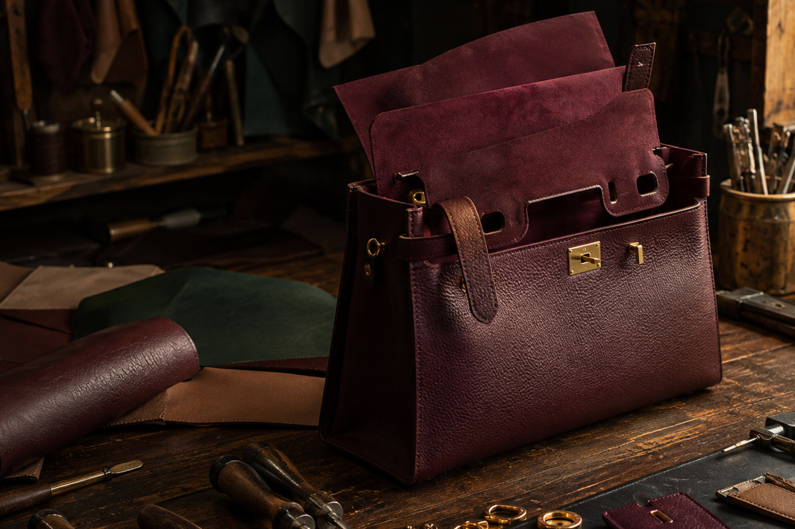
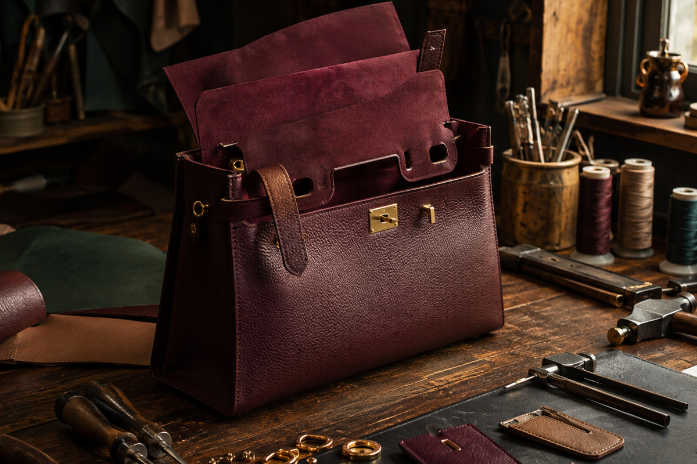
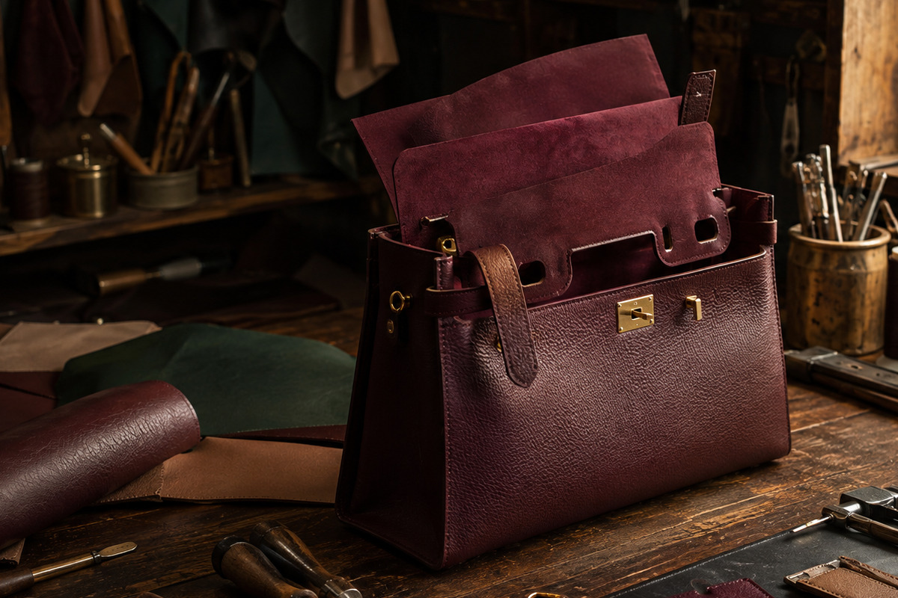

The Art of Choosing an Everyday Tote
How proportion, organisation and handle comfort turn a beautiful tote into a dependable daily companion.
Read the journal entry →THE CARRY INDEX

How proportion, organisation and handle comfort turn a beautiful tote into a dependable daily companion.
Read the journal entry →
Shoulder BagsA practical study of strap drop, scale and silhouette balance.
Read the journal entry →Thoughtful placement, material and hardware choices for hands-free elegance.
Read the journal entry →What a small occasion bag truly needs—and what it can leave behind.
Read the journal entry → Travel
TravelA guide to structure, weight, access and lasting comfort in motion.
Read the journal entry →Understand grain, hand-feel, patina and the realities of maintenance.
Read the journal entry →The discreet details that reveal how thoughtfully a bag was made.
Read the journal entry →
TotesDefine useful roles before adding more objects to your collection.
Read the journal entry →Burgundy, olive, tan and navy can be quietly versatile wardrobe anchors.
Read the journal entry →Simple habits that protect form, finish, straps and interiors.
Read the journal entry →
CrossbodyEdit contents and coordinate finishes for an effortless transition.
Read the journal entry →A calm framework for assessing usefulness, craft, emotion and value.
Read the journal entry →No entries found in this category.